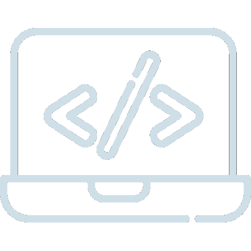
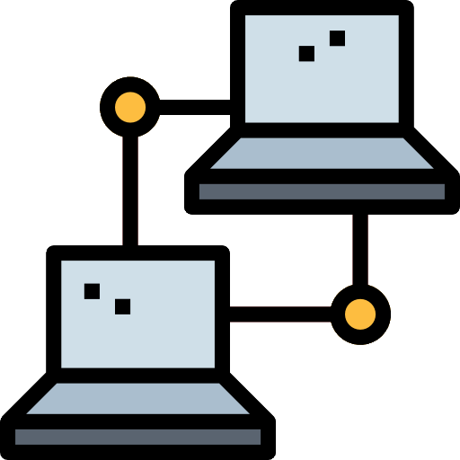

Mon BTS
BTS SIO
(Services Informatique aux Organisations)
Le BTS SIO, ou Brevet de Technicien Supérieur en Service Informatique au Organisation est une formation qui se déroule sur deux ans dans le secteur de l'informatique. Le BTS SIO apporte des compétences dans le support et la mise à disposition de services informatiques, ainsi qu’en cybersécurité. À la fin du premier semestre, il propose deux options (SISR et SLAM) qui délivrent chacune une compétence supplémentaire : l’administration des systèmes et des réseaux (SISR) ou la conception et le développement d'applications (SLAM).
Le signe SLAM signifie « Solutions Logicielles et
Applications
Métier ».
L’option SLAM est principalement destinée aux étudiants qui s’orientent vers
les métiers liés à la conception et la maintenance
de programmes
applicatifs.
Donc grâce à des cours spécifiques, les diplômés seront capables de gérer un
parc informatique ou d’administrer un
réseau au sein d’une entreprise. Aussi
ils
pourront également gérer l’intégration,
la sécurisation et la configuration
des
serveurs, mais aussi des postes clients et des
équipements d’interconnexion.
Voici quelques exemples de métiers que les
étudiants peuvent exercer après
le
BTS SIO option SLAM :
• Développeur d’applications informatiques
• Chargé d’études informatiques
• Responsable des services applicatifs
• Programmeur analyste
• Programmeur d’applications
• Technicien d’études informatiques
L’acronyme SISR signifie «
Solutions d’infrastructure, systèmes et réseaux
».
L’option SISR est donc d’abord destinée aux étudiants qui s’orientent vers
les métiers liés à la conception et la maintenance
d’infrastructures
réseaux. Avant tout cela correspond à assurer la sécurité, la
maintenance et
l’installation des réseaux et des équipements informatiques font partie des
principales missions des futurs
administrateurs, techniciens ou
pilotes
d’exploitation.
Donc voici quelques exemples de métiers que les
étudiants peuvent exercer
après le BTS SIO option SISR :
• Technicien réseau — télécoms
• Technicien systèmes et réseaux
• Technicien de production
• Administrateur systèmes et réseaux
• Support systèmes et réseaux
• Technicien d’infrastructure
• Pilote d’exploitation
La suite
Que faire après un BTS SIO ?
Finalement après un BTS SIO, il est possible de poursuivre les études, de réaliser licence professionnel ou une école d’ingénieur. Il est aussi possible de se lancer dans la vie professionnelle après ce diplôme.